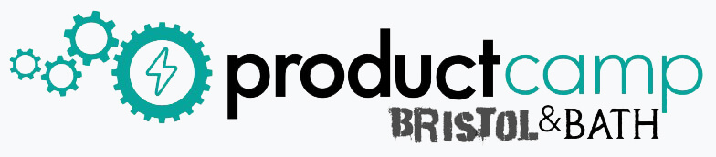

<section id="about" class="bg-light">
    <div class="container">
        <div class="row">
            <div class="col-md-8 mb-md-3">
                <h2 class="section-heading text-center">What is ProductCamp?</h2>
                <hr class="dark">
                <p class="text-dark">Productcamp is a free, user-driven, collaborative "unconference" for Product Managers. The concept was founded in Silicon Valley in 2008 by Rich Moronov. Productcamp has since been brought to major cities across the world by local product communities.</p>
                <p class="text-dark">The “unconference” format will give you the opportunity to learn from, share with, and network with peers involved in product management in the Southwest of England. ProductCamps differ from traditional conference formats because:
                </p>
                <ul class="text-left">
                    <li class="text-left">The event is <strong>Free</strong></li>
                    <li class="text-left">The agenda is driven by the participants and developed on the day</li>
                    <li class="text-left">There are no “attendees”, everyone is a participant (present, lead a discussion or workshop, share experiences or best practices)</li>
                </ul>
                <p class="text-dark">ProductCamp Bristol & Bath is brought to you by the ProductTank Bristol team. ProductTank Bristol has been going for 3 years and is now 800 people!</p>
            </div>
            <div class=" col-md-4 my-auto">
                
            </div>
        </div>

        </div>
</section>
